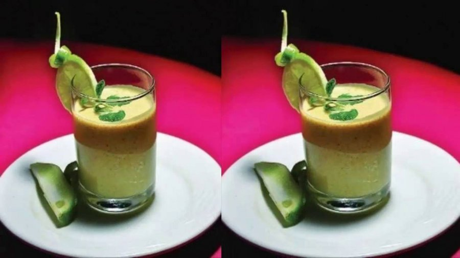

বোরহানি(Borhani)

বোরহানি(Borhani)
উপকরণ(Ingredients)
টক দই- ২ কাপ(Sour Curd 2 cups)
পুদিনা পাতা- আধা কাপ(Mint Leaves 0.5 cup)
কাঁচামরিচ- ৪টি(Green Chili 4)
চিনি- ৩ চা চামচ(Sugar 3 tea spoon)
ধনে গুঁড়া- ১ চা চামচ(Coriander Powder 1 tea spoon)
বিট লবণ- ১ চা চামচ(Bit Salt 1 tea spoon)
গোলমরিচের গুঁড়া- ১ চা চামচ(Black Pepper Powder 1 tea spoon)
লবণ- আধা চা চামচ(Salt 0.5 table spoon)
ধনেপাতা কুচি(Coriander leaves 0.5 cup)
আদা কুচি(Thinly Sliced Gingers)
পদ্ধতি(Process)
ব্লেন্ডারে পুদিনা পাতা, কাঁচামরিচ, ধনেপাতা কুচি দিয়ে ১ মগ পানি দিয়ে দিন। উপকরণগুলো একসঙ্গে ব্লেন্ড করুন। গোলমরিচ গুঁড়া, ধনে গুঁড়া, জিরার গুঁড়া, লবণ, চিনি, টক দই দিয়ে আবার ব্লেন্ড করুন। ব্যস! তৈরি হয়ে গেল বোরহানি। পরিবেশন করুন গ্লাসে ঢেলে। ঝাল বেশি খেলে কাঁচামরিচের পরিমাণ বাড়িয়ে নিতে পারেন।
Homepage